Microsoft Defender for Cloud Apps Plugin for Threat Exchange
This document provides instructions to configure Microsoft Defender for Cloud Apps with the Threat Exchange module of the Netskope Cloud Exchange platform. This integration allows for sharing of sanctioned URLs with Netskope.
To complete this configuration, you need:
A Netskope Tenant (or multiple, for example, production and development/test instances).
A Secure Web Gateway subscription for URL sharing.
A Netskope Cloud Exchange tenant with the Threat Exchange module already configured.
A Microsoft Defender for Cloud Apps instance.
Get the Microsoft Defender for Cloud Apps API token.
Configure the Microsoft Defender for Cloud Apps Plugin.
Configure sharing between Netskope and Microsoft Defender for Cloud Apps.
Validate the Microsoft Defender for Cloud Apps Plugin.
Click play to watch a video.
Log in to your Microsoft Defender for Cloud Apps dashboard.
On the Settings menu, select Security extensions and then API tokens.
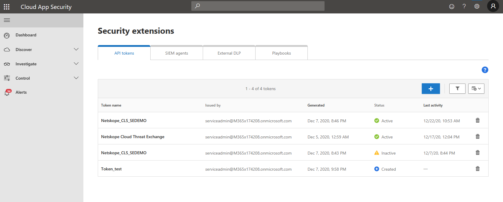 Click the plus icon, Generate new token, provide a name to identify the token in the future, and click Generate.
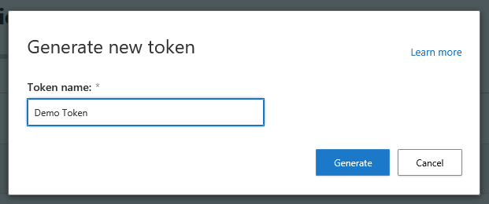 Copy the newly generated API Token and URL.
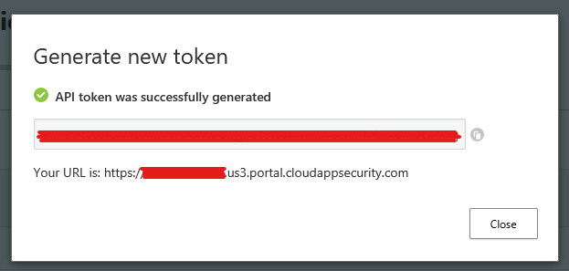
Choose Threat Exchange from the Navigation Pane. Then choose Plugins.
Select the Microsoft Cloud App Security (CTE) box to open the plugin creation pages.
Enter and select the Basic Information on the first page:
Configuration Name: Enter a name appropriate for your integration.
Poll Interval: Adjust to environment needs. We recommend not to go below 5 minutes for production environments.
Aging Criteria: Leave the default.
Override Reputation: Leave the default.
Enable SSL Verification: Leave the default.
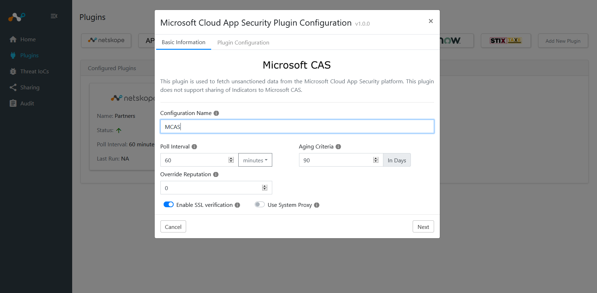 Click Next.
Enter and select the Configuration Parameters on the second page:
URL: Enter the URL of your Microsoft Defender for Cloud Apps API.
API Token: Enter your Microsoft Defender for Cloud Apps API token.
Enable Tagging: Leave the default (Yes).
Tag Name: Leave the default.
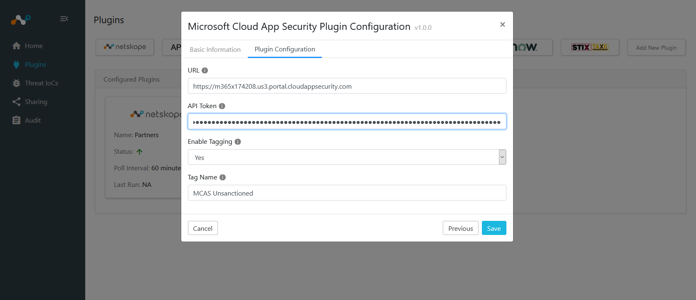 Click Save in the top right corner. Go to Threat Exchange > Plugins to see your new Microsoft Defender for Cloud Apps (was MCAS) plugin.
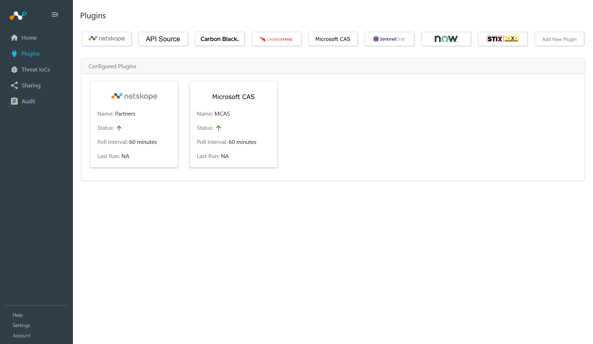
Select Sharing from the left panel.
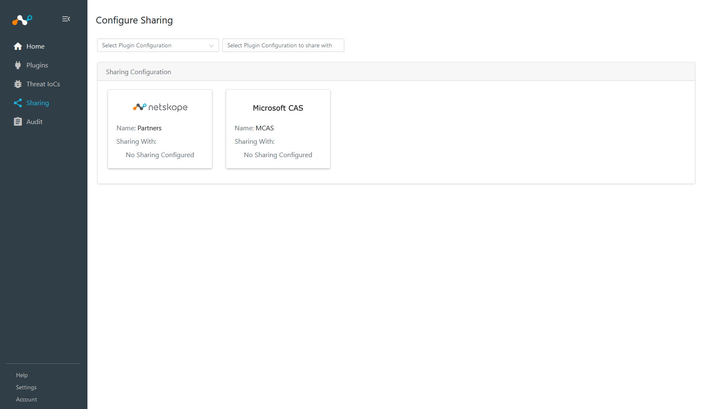 In the Plugin Configuration dropdown select Microsoft Cloud App Security (CTE).
In the Plugin Configuration to share dropdown select Partners.
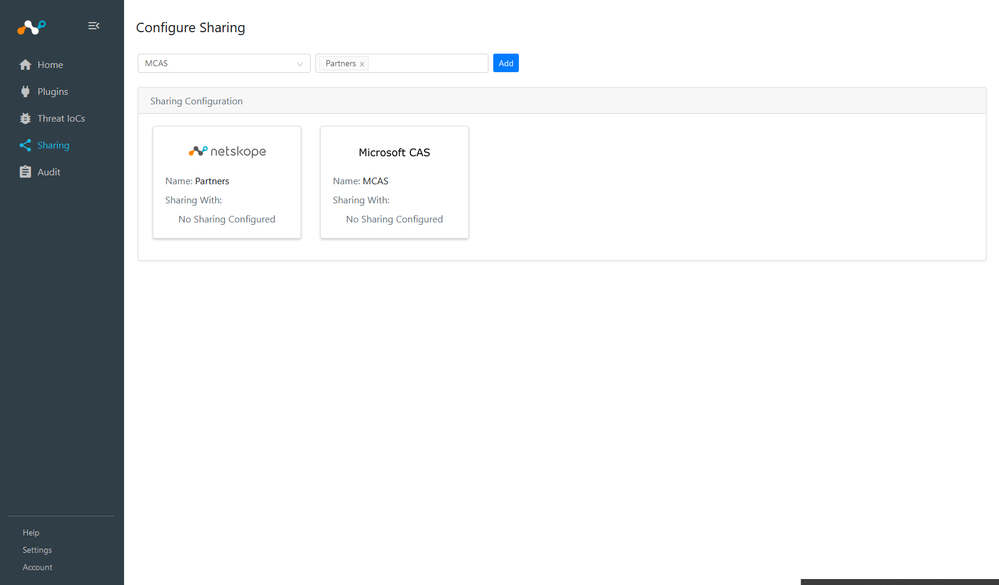 Click Add.
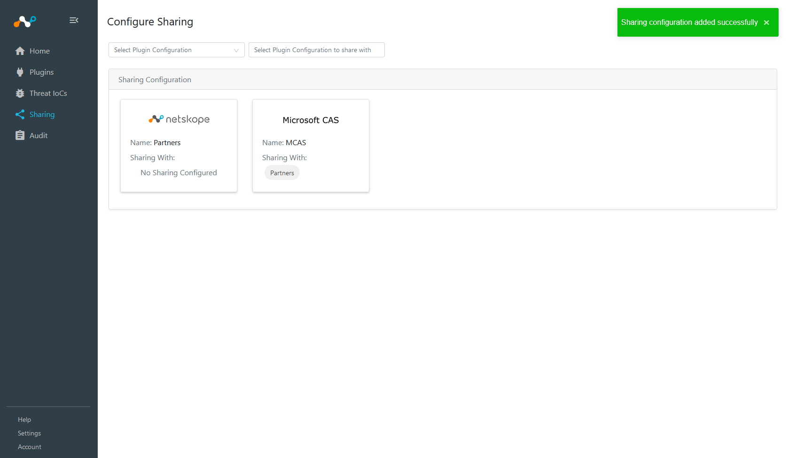
In order to validate the integration you must have Unsanctioned apps on Microsoft CAS. Microsoft CAS polling Intervals were defined during plugin configuration.
Go to Cloud Exchange and select Threat IoCs. You should see records from your Defender plugin. You can filter based on Source values to check both the Netskope and Microsoft Defender for Cloud Apps plugins.
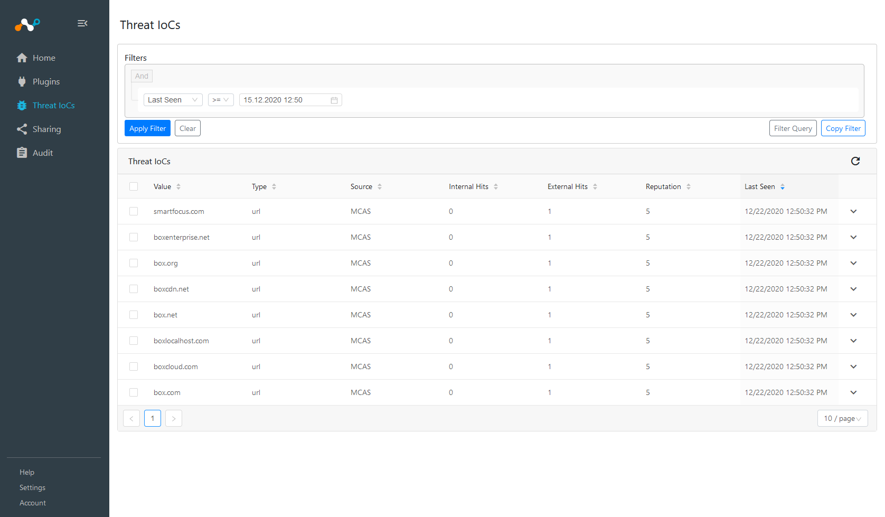 In the Netskope UI, go to Policies > Web, and click URL List.
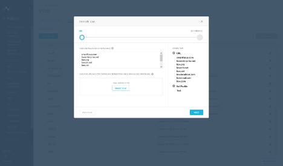 If data is not being brokered between the platforms, you can look at the audit logs in Cloud Exchange. In Cloud Exchange, go to Logging and look through the logs for errors.